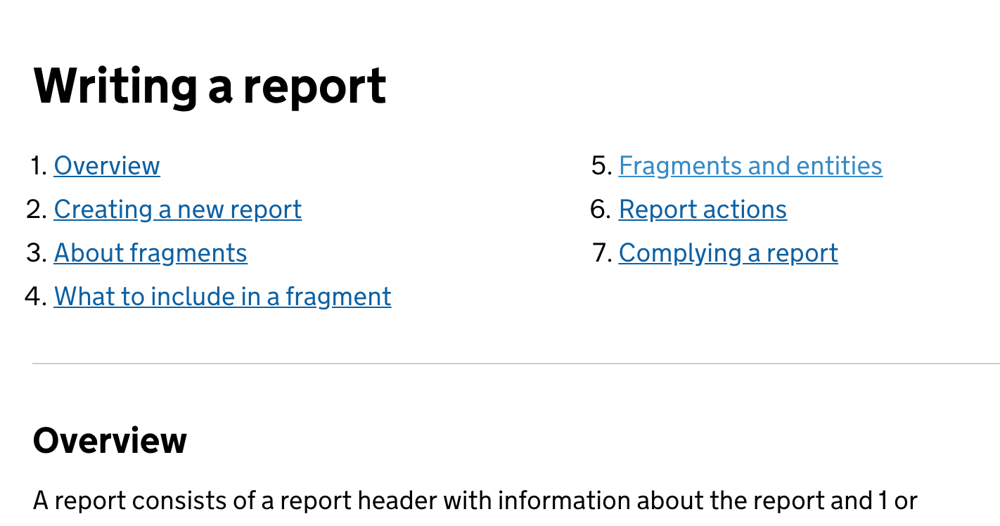

Onboarding new users
Helping report writers in UK Border Force adjust to a new system for writing reports.
Problem
Border Force officers who write reports were familiar with an old system and had created a lot of workarounds to compensate for missing functionality - the technology dictated process, rather than helping users do the jobs that need to be done. They were unfamiliar with the new reporting tool interface and workflow.
What I did
I observed how users wrote reports and noted their pain points with the legacy system. This meant that I could write instructional write microcopy to guide users through the new interface. I also developed onboarding flows for new functionality and guides to help users adapt to the new workflow.
Result
The new system has a 90% satisfaction rating from users and has reduced the time it take users to complete a report by half.